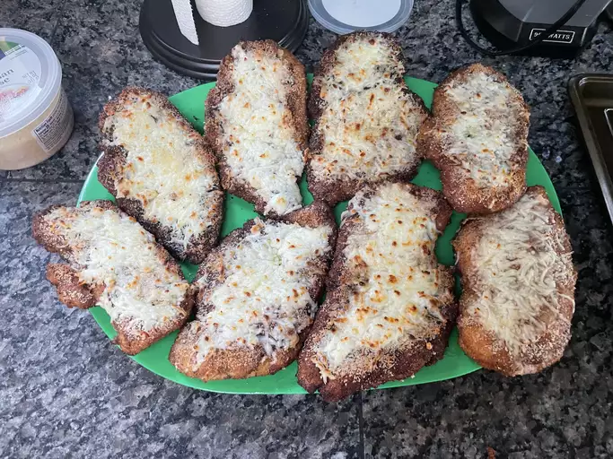

Chicken Parmesan Pasta Recipe!
This chicken Parmesan pasta is the perfect dish to lure kids into the kitchen — what kid doesn't like crispy chicken and spaghetti? This recipe makes twice the sauce needed, so freeze half for another meal.

Chicken Parmesan Pasta’s ingredients:
Tomato Sauce:
- 2 tablespoons extra-virgin olive oil
- 2 medium garlic cloves, peeled and crushed
- 1 (28 ounce) can crushed tomatoes
- 1/2 cup teaspoon dried basil
- 1/4 cup teaspoon dried oregano
-
1/4 teaspoon sugar
-
salt and freshly ground black pepper to taste
Pasta:
- 8 ounces spaghetti or linguine
Chicken Cutlets:
- 2 large boneless, skinless chicken breasts (6 to 8 ounces each), halved crosswise
- 1 large egg
- 1/2 cup dry bread crumbs
- freshly ground black pepper to taste
- 1/4 cup extra-virgin olive oil
- 1/2 cup grated part-skim mozzarella cheese
- 1/4 cup grated Parmesan cheese, plus more for serving
How to Make Chicken Parmesan Pasta
-
To make the tomato sauce: Heat oil and garlic in a large saucepan over medium-high heat until garlic starts to sizzle.
-
Stir in tomatoes, basil, oregano, and sugar; season with salt and pepper.
-
Bring to a simmer; cook until sauce slightly thickens and flavors meld, 10 to 12 minutes. Cover and keep warm. (Remember, this makes twice the amount of sauce needed, so put aside half for another meal.)
-
Meanwhile, bring a large pot of lightly salted water to a boil. Cook spaghetti in boiling water, stirring occasionally, until tender yet firm to the bite, about 12 minutes. Drain and keep warm.
-
To make the chicken cutlets: Lay chicken pieces between 2 sheets of plastic wrap. Use a mallet or heavy pan to pound chicken to about 1/4-inch thickness.
-
Beat egg in a shallow dish until well blended. Season bread crumbs with black pepper in another shallow dish.
-
Preheat the oven broiler to high. Place a rack 4 to 5 inches from the heat source.
-
Working with one cutlet at a time, dip chicken in beaten egg, then in bread crumbs. Lay breaded cutlets on a wire rack set over a cookie sheet (this step helps breading stay put).
-
Heat 1/4 cup oil in a 12-inch skillet over medium-high heat until it shimmers.
-
Fry breaded cutlets in hot oil until golden brown on each side, about 5 minutes. Wash and dry the wire rack and return to the cookie sheet; place fried cutlets on the clean wire rack.
-
Top each cutlet with mozzarella and Parmesan cheese. Broil until cheese melts and is spotty brown, 2 to 3 minutes.
-
Portion pasta onto 4 plates and top each with a chicken cutlet. Spoon 2 to 3 tablespoons tomato sauce over each cutlet, then sauce pasta as desired. Serve with extra Parmesan at the table.